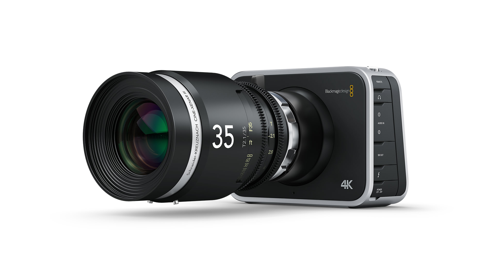

Telly Award Winning Filmmaker, video journalist and coder

Film Work
film work covers a wide range of genre and style, and are all microbudget thrillers
Nicholas Chirico's journalism work started out in the news rooms of the Chicago Tribune
Nicholas Chirico's Coding work is jusy getting warmed up!
`